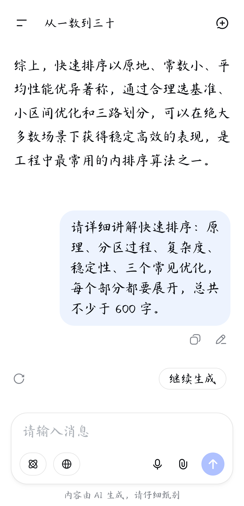

DS Echo
安卓 · 开源 · 全本地
我自己写的
7 天前的长对话
我给它接回来了
官方导出的 ZIP 丢进去，原样接着聊
DeepSeek 官方 App
×
该对话已超过
7 天未活跃
系统不再支持继续此对话，建议开启新对话。
发起新对话
前面几百轮设定，全没了
×
续不上
VS

✓
接上了
不覆盖原有记录
· 导入前可预览
走你自己的 API Key，没有 7 天过期
往下看 3 步教程 →
左为官方限制示意 · 右为真机截图